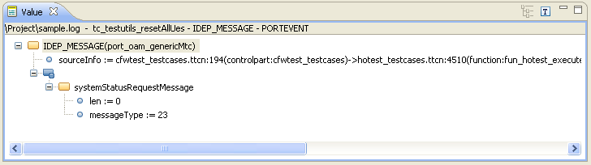
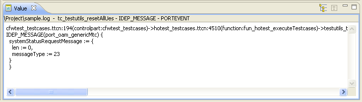
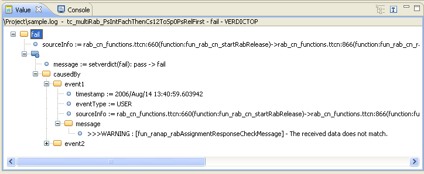

Select the action Open Value View.
Double click or Enter can be used if the Default behaviour in MSC view
in User Configuration - General Settings
is set to Open Value View.
Details about the event are shown in the Value view. The source
information in the log record is displayed first and then the message.
The representation is either as a graphical tree view or as indented text,
depending on the settings in the General
Settings. It is possible to switch between the two different representations
using the  button for Graphical Tree and
button for Graphical Tree and
 button for Text in the top of the Value
view.
button for Text in the top of the Value
view.
The graphical tree is expanded when the Value view is opened. The content
of the Value view is empty, when no details about the event exists.
Only one message detail window can be opened at a single time.
For setverdict(error) and setverdict(fail) events the text displayed in
the Value view includes the message the caused the event, e.g. all messages
since last setverdict event that contains a predefined string. The predefined
strings are user configurable in the Setverdict
preference page.
-
Graphical Tree
The message is decoded and displayed in a graphical tree view with the decoded message presented in a hierarchal structure. A tree value is either a composite with child values or a parameter value with no children. Each type in the tree has a corresponding icon that represents its content.
Functions:
-
You can expand and collapse tree entries that have child values.
-
The root value of the tree is the message name and the connecting port name in the form: message name (port name).
 -
-
Text
The message is formatted and displayed in as text.
Functions:
-
The first row in the text is the message name and the connecting port name in the form: message name (port name).
 -
-
Setverdict(error/fail)
The message in the Value view also include the event that caused the setverdict(fail/error) event.
